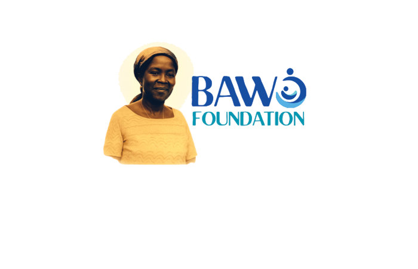

Legacy & Leadership
Dedicated to serving maternal and newborn lives.
Our Origins
The BAWO Foundation traces its roots to Madam Bessie (Bawo) Wilson Omuso, the matriarch of the Omuso family and a direct descendant to Chief Kari of Nembe in Bayelsa State, South-South Nigeria.
Her character was defined by her generosity, love, and unwavering commitment to her family and community. These virtues now serve as the pillars of the BAWO Foundation’s mission.

Our Leadership
Dr. Inara Omuso, MD, FACOG
FOUNDER
Spearheading the clinical direction and maternal health initiatives.
Dr. Aye Wilson Omuso, PhD
INSPIRATION & CO-LEADER
Guiding the foundation's vision through research and education.
Our Mission
"To serve maternal and newborn healthcare by inspiring hope and contributing to the improved health and well-being of pregnant women and their newborns through integrated clinical practice."